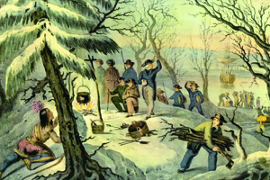
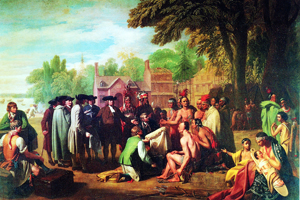
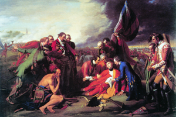

Lezione 14  Stati Uniti
Stati Uniti

-
285
470
-
320
485
-
225
470
-
310
340
-
285
505
-
340
455
-
225
510

MASSACHUSSETS
1620: Lo sbarco dei padri pellegrini sulle coste del Massachussets ha assunto nella cultura americana un carattere leggendario: in quest’incisione di Currier e Ives, i più popolari editori di stampe ottocenteschi, ne vediamo una versione che ha toni quasi fiabeschi. 
PENNSYLVANIA
I rapporti con le tribù di nativi americani è una delle questioni più delicate per i primi coloni: in questo dipinto di Benjamin West vediamo il quacchero William Penn mentre firma un trattato con gli irochesi e fonda così la nascita dello stato della Pennsylvania.
QUEBEC
La battaglia del Quebec, combattuta nel 1759, è uno degli episodi cruciali della Guerra dei sette anni. A capo delle truppe inglesi c’è il generale James Wolfe, che vi trova la morte: questo dipinto del 1771 di Benjamin West rievoca l’episodio in chiave epica, descrivendo l’agonia di Wolfe di fronte a suoi aiutanti e ad un guerriero pellerossa.UTAH
Le tribù indiane che popolano l’America del Nord sono per lo più di pescatori e cacciatori, poco dedite all’agricoltura.MASSACHUSSETS
A partire dal 1620 si ha un massiccio insediamento di padri pellegrini nel Massachusetts. Il modello coloniale inglese è diverso da quello delle altre potenze europee. Gli inglesi si trasferiscono nel Nuovo Mondo con le famiglie al seguito. Non hanno intenzione di conquistare, ma di stabilirsi su una terra nuova: sono soprattutto dissidenti religiosi puritani.MARYLAND
A metà ‘700 le tredici colonie sono formate da un nord, la Nuova Inghilterra (New Hampshire, Massachusetts, Connecticut, Rhode Island), un centro (New Amsterdam, New Jersey, Pennsylvania, Delaware) un sud (Maryland, Virginia, Carolina del Nord, Carolina del Sud, Georgia). Specialmente nel sud la presenza di schiavi neri è massiccia.QUEBEC
1756-1763: scoppia la Guerra dei sette anni tra inglesi e francesi, che si chiude con la catastrofe per il colonialismo francese (che viene battuto anche in India e in Africa).